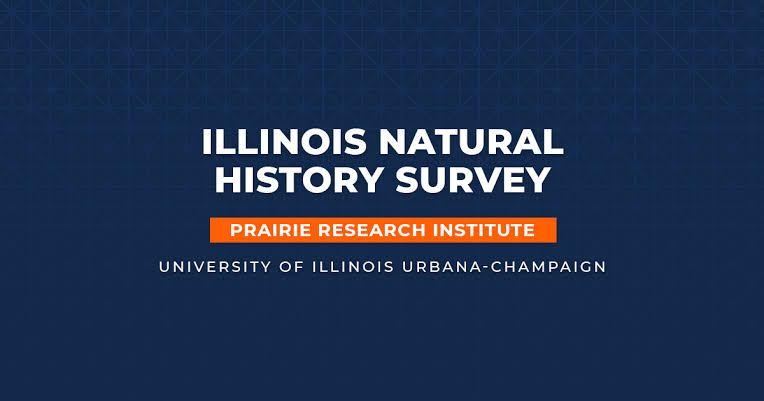

GPA in the MS Information Management program at UIUC.
Available · Graduating May 2027
Chaitanya
Nirantar
I build the pipelines, models, and dashboards that turn messy operations into decisions a team can trust. Data engineering, analytics, and backend.
4.0
GPA · MS at UIUC
API latency in production at Reliance Jio, after indexing and pagination.
Government cloud tenants on the microservices platform I built against.
Detection accuracy on 1M+ network packets, DRDO research internship.
Selected work
Two current roles, then the production backend and research that came before them.

Aquatic Ecology Database Developer
June 2026 – PresentIllinois Natural History Survey, Prairie Research Institute, UIUC
- Architecting a relational database past 70 tables for decades of fisheries, water-quality, vegetation, mussel, and telemetry data, keeping legacy identifiers beside surrogate keys.
- Designing normalized PostgreSQL and PostGIS schemas so programs can trace samples and analyze them together.
- Building Python and R ETL with automated QA/QC, plus R Shiny and backend data access for ecologists and field researchers.
Technology Consultant
January 2026 – PresentBusiness Intelligence Group, Champaign
- Replacing fragmented Excel grant reporting with a centralized SQL platform for high-priority federal grants.
- Ran feasibility and tool evaluation for storage, querying, and reporting, then shaped the architecture.
- Engineered Java services for ingestion and querying, with JWT authentication and role-based access across stakeholders.
Software Development Engineer
December 2023 – June 2025Reliance Jio Platforms Limited, Mumbai
- Backend developer on a cloud-native microservices platform for 10+ government cloud tenants, using Java, Spring Boot, and SQL, shipped through CI/CD on Azure DevOps and Kubernetes.
- Designed a quota system across subscription, project, and organization, tracking 500+ cloud resource allocations.
- Built REST APIs for executive dashboards used by 50+ admins, cutting diagnosis time by 20%. Query optimization, indexing, and pagination reduced production API latency by 30%.
Project Intern
September 2022 – March 2023Defence Research and Development Organisation, Pune
- Built a machine-learning network intrusion detection system for security monitoring.
- Processed 1M+ packet records and reached 96% detection accuracy.
- Captured live traffic in Wireshark, turned it into flow features with CICFlowMeter, and engineered signals such as flow duration, packet rate, and byte distribution.
Android Intern
September – December 2022Task Consultants, Pune
- Designed and deployed a digital health platform for colitis patients.
- Automated onboarding and cut manual registration effort by 70%.
Work you can open
Public data projects on GitHub, then the Tableau workbooks. Each card leaves this site.
Python · FastAPI · SQLite
Open the code →
DataHub Console
A research console that pulls live GitHub repository data, validates every record, and quarantines the ones that fail. The catalog, null rates, and freshness are computed from the loaded table. Ask a question in English and an LLM writes SQL. A read-only connection and a SELECT-only guard are what actually run it.
Power BI · 2025
Open the workbook →
Lifestyle Balance Analytics
A Power BI report on workouts, nutrition, and activity. Three views: Train Smarter, Eat Better, and Diet Explorer. The workbook is in the repo.
Java · React · MySQL
Open the app →
IIRER case management
A live app for vocational rehabilitation workflows: signup, JWT login, customer search, and VR, employment, and closure forms. Spring Boot on Railway, React on Vercel.
Tableau · Jun–Jul 2025
Open the dashboard →
MegaMart sales performance
Agent-level KPIs, sales over time, and prior-month comparison for investor decisions. Target achievement 72%. Sales tracked $1.57M+.
Tableau · 2025
Open the dashboard →
GreatFit review analytics
Customer sentiment, product ratings, and review trends over time.
Tableau · 2025
Open the dashboard →
Olist e-commerce
Order trends, delivery performance, seller analytics, and revenue segmentation on Brazilian marketplace data.
Tableau · 2025
Open the dashboard →
Meta stock performance
Historical trend, volume, and performance benchmarking for Meta’s share price.
Tableau · 2025
Open the dashboard →
Park City urban analytics
Geospatial and operational views for visitor trends and resource allocation.
Strategy · Aug 2024 – Jan 2025
Classroom simulation
Markstrat B2B simulation
Ran a five-product B2B portfolio through a competitive market simulation. Market share +14%. Revenue +16%.
The path
Computer engineering in Pune, production software in Mumbai, then a data and strategy degree in Illinois.
BE, Computer Engineering
Savitribai Phule Pune University. GPA 8.69/10. Capstone: an IoT shopping trolley with automated item detection and real-time billing.
Research and product internships
DRDO intrusion detection, then a digital health app at Task Consultants. Editorial head for the Association of Computer Engineering Students and IEEE SIESGST, and STEM outreach with GDSC in Navi Mumbai schools.
Software Development Engineer, Jio
Eighteen months on government cloud backends in Mumbai: quotas, executive dashboards, and faster APIs.
MS, Information Management, UIUC
August 2025 – May 2027. 4.0 GPA. Bridging software, analytics, and how an organization actually uses the data. A 40-page ERP strategy paper on SAP, Oracle, and Workday is available on request.
Open for May 2027
Data engineering, data analytics, and backend. Champaign today. Willing to relocate.
How I work
The same set behind the data engineering work, the analyst dashboards, and the services.
Data engineering
Python, SQL, PostgreSQL, PostGIS, SQL Server, MySQL, and SQLite. ETL with validation and quarantine, schema design, and R when the researchers already live there. FastAPI for the catalog and the ask-the-data API.
Analytics
Tableau, Power BI, Excel, and SQL for the question behind the chart. KPI design, time series, geospatial views, and the habit of showing the number and the grain it was counted at.
Backend and models
Java, Spring Boot, React, REST, JWT, Kubernetes, and Azure DevOps. Detection models from the DRDO internship. For DataHub, an LLM proposes SQL and a read-only guard is what runs it.
Hire me